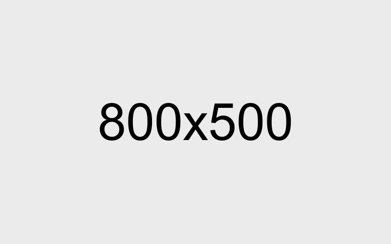

Las enmiendas de Manila y lo que exige hoy cada rango, resumido.
Leer másPollux centraliza la documentación STCW de tu tripulación y calcula su cumplimiento por rango — sincronizado con Cástor,
la app del marino. Sin correos perdidos ni PDFs sueltos.
Tu equipo entra desde cualquier computador con navegador. Nada que instalar, nada que actualizar.
Rangos y documentos requeridos según STCW, MLC 2006 y AMP Panamá — mercante, offshore, pesca, yates y aguas nacionales.
Cada certificado calcula su estado — vigente, por vencer o vencido — apenas se actualiza en Cástor.
Cada marino mantiene su documentación STCW al día en Cástor. Pollux te muestra el expediente completo, verificado y organizado — sin pedirlo por correo.
Diseñado para navieras y agencias que gestionan tripulación real, no demos.
Base de datos de tripulación, documentos y estado de cumplimiento en un solo panel.
Score de cumplimiento calculado según STCW y MLC 2006, por rango y categoría de flota.
Nada de carpetas ni hojas de cálculo. Cada marino, con su expediente completo.
Mercante, offshore, pesca, yates o aguas nacionales — cada categoría con su propio catálogo.
Antes de que un certificado venza, tu equipo ya lo sabe.
Acompañamiento del equipo de PB Trading Solutions durante la implementación.
Cotiza según el tamaño de tu tripulación. Sin compromiso de instalación.
Para flotas pequeñas.
Para operaciones en crecimiento.
Para flotas medianas.
Para navieras grandes.
"Cada marino aparece con su expediente completo y verificado —
sin perseguir certificados por correo."
"Un solo panel para ver el cumplimiento STCW de toda
la tripulación, por rango y por flota."
"Alertas antes de que un certificado venza —
tu equipo se entera primero, no después."
Referencia rápida sobre STCW, MLC 2006 y verificación de certificados. Ver todos →

Las enmiendas de Manila y lo que exige hoy cada rango, resumido.
Leer más
Descanso, vacaciones y límites de servicio continuo, explicados sin jerga legal.
Leer más
Cómo Pollux verifica un certificado contra el registro oficial, paso a paso.
Leer más